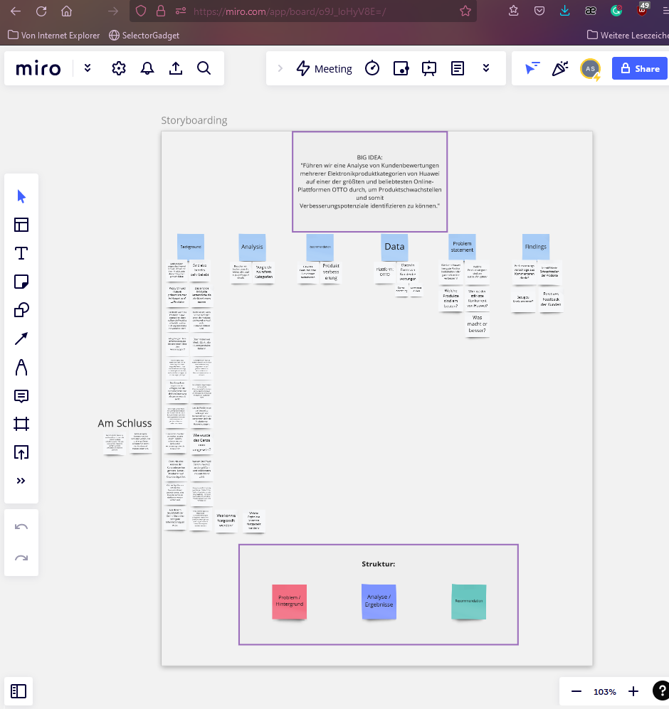
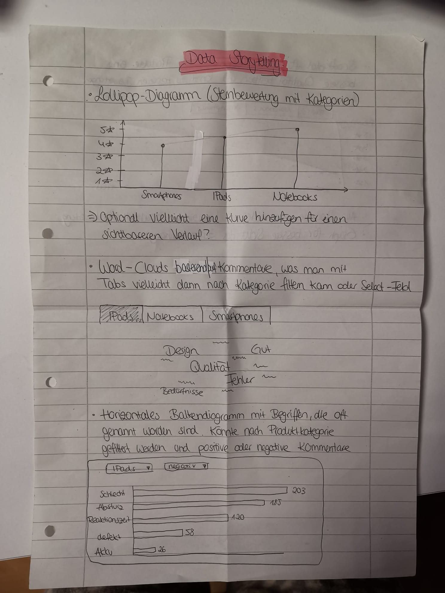

Vorgehensweise¶
Im Folgenden wird nun die Vorgehensweise im Projekt beschrieben.
1. Thema festlegen¶
Im ersten Schritt war die Festlegung auf ein Thema erforderlich. Hierfür wurde die Website https://dash.gallery/Portal/ herangezogen, um bereits umgesetzte Dashboards einzusehen. Das sollte als Inspirationsquelle genutzt werden, um auf eigene Ideen zu kommen. Zudem konnte man einen Überblick über verschiedenste Visualisierungsformen erhalten.
Durch bereits durchgeführte Projekte in vergangenen Semestern waren Kenntnisse im Bereich Web-Scraping vorhanden. Aus diesem Grund wurde auf diesem Wissen aufgebaut und eine ähnliche Projektidee gewählt. Diese ging der Frage nach, wie Produkte von der Marke Huawei auf der Online-Shop-Plattform OTTO bewertet werden und welche Kritik von Kund:innen geäußert wird.
2. BIG IDEA Worksheet¶
Im nächsten Schritt wurde das vom Kurs gestellte Dokument “BIG IDEA Worksheet” genutzt, um das Thema und vor allen Dingen die Zielgruppe des Vortrags zu bestimmmen. Das half dabei die relevantesten Informationen und Gedanken zum Projekt festzuhalten und bei der weiteren Projektbearbeitung stets zu berücksichtigen.
3. Storyboarding¶
Auf einer virtuellen Pinnwand-Plattform namens Miro, wurden Gedanken nach dem Storyboarding Prinzip nach der Brainstorming Methode notiert. Die einzelnen Aspekte waren:
Background
Analysis
Recommendation
Data
Problem Statement
Findings

Daraus ließ sich dann eine Struktur ableiten, die in der Präsentation eingehalten werden sollte. Folglich sollte zunächst das Problem und der Hintergrund beschrieben, dann die Analyse und Ergebnisse präsentiert werden, bevor am Schluss eine Handlungsempfehlung für das fiktive Unternehmen ausgesprochen werden sollte.
4. Layout des Dashboards bestimmen¶
Hierbei wurde sich intensiv mit der Frage beschäftigt:
“Wie sollen die vorliegenden Daten visualisiert werden?”
Um eine Antwort auf diese Frage zu finden, konnte die Website https://www.data-to-viz.com/ Abhilfe schaffen. Auf dieser Webseite hat man die Möglichkeit nach den vorliegenden Datentypen zu filtern und auf diese Weise passende Visualisierungsformen vorgeschlagen bekommen. Eine sehr hilfreiche Plattform, die einen in diesem Zwischenschritt optimal unterstützt hatte.
Nachdem nun eine Kollektion von möglichen und passenden Darstellungsformen vorlag, wurden diese erstmalig auf Papier skizziert. Diese Skizzen wurden dann final im Dashboard umgesetzt und boten während dem Programmierprozess eine gute Orientierung.

5. Umsetzung des Dashboards mit Dash und Plotly¶
Für die technische Umsetzung der Visualisierungen wurde die Python Bibliothek Plotly genutzt. Doch bevor die Diagramme erstellt werden konnten, mussten zunächst die Daten beschaffen werden. Dafür wurden alle Produkte der Kategorien: Smartphones, Smartwatches, Tablets und Notebooks von Huawei auf der Online-Plattform OTTO gescrapt.
Note
Info Dieser Vorgang fand nicht mithilfe von Python statt, sondern es wurde RStudio und die Programmiersprache R genutzt. Hintergrund dieser Entscheidung war, dass das Programm und die Sprache in früheren Veranstaltungen für denselben Zweck eingesetzt wurde. Daher war der Umgang und die Vorgehensweise bereits bekannt.
Zunächst wurden faktische Daten beschaffen, wie der Produktname, Preis, die Sternebewertung sowie die Weiterempfehlungsrate. Diese numerischen und kategorialen Daten wurden in einem Dataframe abgespeichert und waren die Grundlage für die folgenden Visualisierungsformen: Das Lollipop- und Donut-Diagramm.
Im nächsten Schritt wurden dann die Kommentare der Produkte gescrapt und ebenfalls in einem Dataframe abgespeichert. Diese Daten waren die Grundlage für das Wordcloud-Diagramm. Dabei wurden die Kommentare als ganze Textabschnitte abgespeichert und untersucht, um daraus eine WordCloud zu generieren. Anders als beim Balkendiagramm: Für die Häufigkeitsauszählungen mussten die Kommentare im Schritt davor tokenisiert werden. Das heißt die Kommentare wurden Wort für Wort voneinander getrennt, sodass im Dataframe in jeder Zeile nur ein einzelnes Wort aufgeführt wurde. Anschließend wurde die Häufigkeit ausgezählt und ebenfalls im Dataframe abgespeichert. Mithilfe von Plotly konnte dann ein horizontales Balkendiagramm erstellt werden.
6. Erstellung des Reports¶
Der Report sollte als eine Art Handout denjenigen zur Verfügung stehen, die während der Präsentation nicht anwesend sein konnten. Daher waren ausführlichere schriftliche Erklärungen und Informationen zu den Visualisierungen notwendig, um die Ergebnisse aufzubereiten. Es stellte quasi eine schriftliche Form der Präsentation dar, die man sich im Nachgang jederzeit nochmal durchlesen kann.
7. Erstellung der Präsentation¶
Da die Ergebnisse des Dashboards in einer Präsentation vorgestellt werden, musste natürlich noch eine Präsentation gestaltet werden. Hierfür wurde Canvas/PowerPoint genutzt und einzelne Folien für den Vortrag erstellt. Währenddessen ist geplant, das Dashboard miteinzubinden und live vorzustellen. Wichtig bei der Erstellung war, dass darauf geachtet wurde, nicht zu viele Informationen auf einer Folie festzuhalten, sondern ein Ergebnis pro Slide zu präsentieren. Das führt dazu, dass sich das Publikum auf die Erkenntnisse fokussieren kann, ohne mit zu vielen Inhalten konfrontiert zu werden, da das die Konzentration und Aufnahmefähigkeit negativ beeinträchtigt.
8. Verfassung der Projektdokumentation¶
Abschließend wurden detaillierte Einzelheiten zur Vorgehensweise in dieser Projektdokumentation festgehalten, um den Aufbau und Hintergrund des Projekts besser nachvollziehen zu können. Dies wurde mithilfe eines Jupyter Books umgesetzt und in Github geteilt, um es öffentlich zugänglich zu machen.